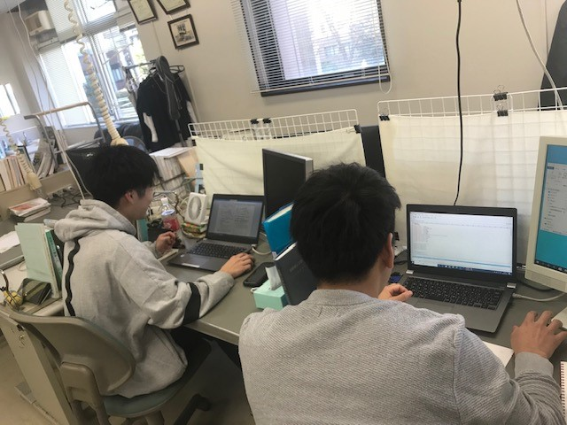
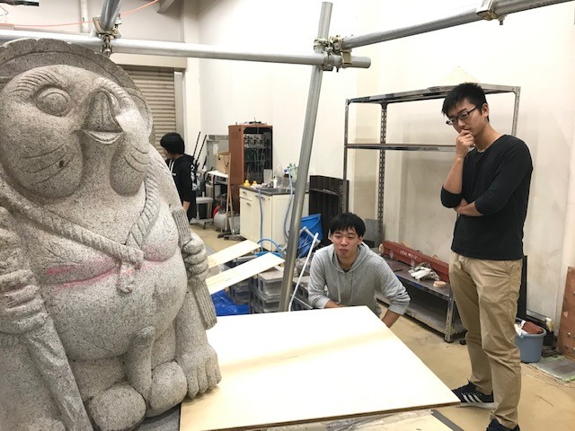

About Us
本研究室では、地震、波浪や風などの"自然由来の力"と、交通振動や 機械振動などの"人間由来の力"に対する構造物の挙動を数理的に解明し、 設計法などを考案することにより、合理的で安全な構造物を造るために必要 な知見の構築に努めています。研究対象は、"Engineerd Structures"の言葉 が示す全ての構造物であり、土木構造物、建築構造物、機械構造物、海洋構造物 など多岐に亘ります。


本研究室では、地震、波浪や風などの"自然由来の力"と、交通振動や 機械振動などの"人間由来の力"に対する構造物の挙動を数理的に解明し、 設計法などを考案することにより、合理的で安全な構造物を造るために必要 な知見の構築に努めています。研究対象は、"Engineerd Structures"の言葉 が示す全ての構造物であり、土木構造物、建築構造物、機械構造物、海洋構造物 など多岐に亘ります。